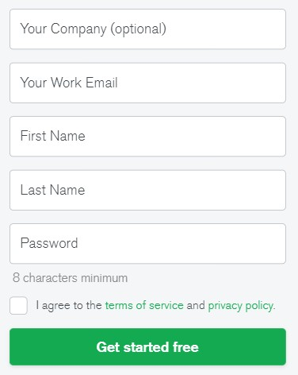
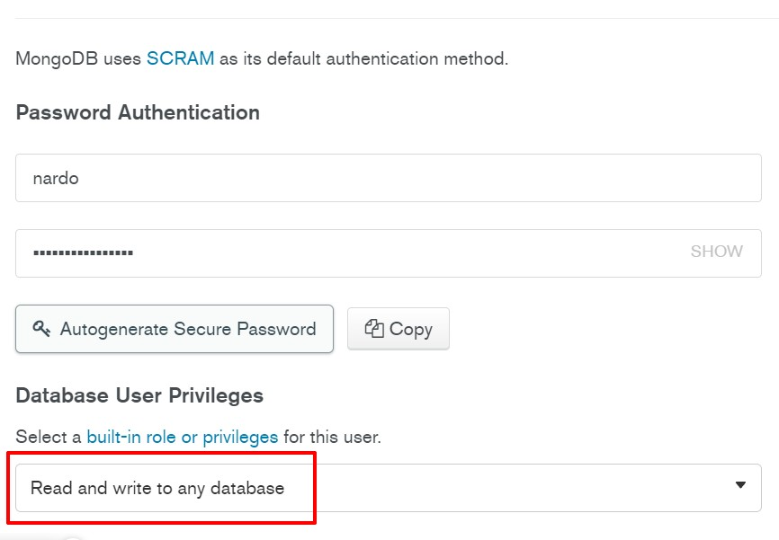
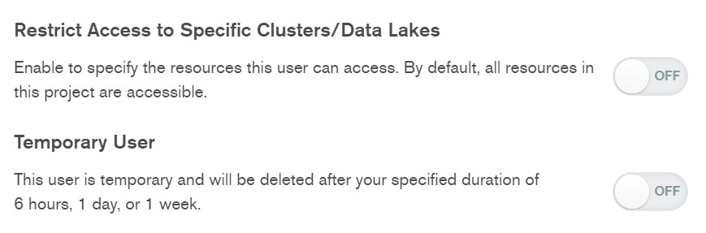
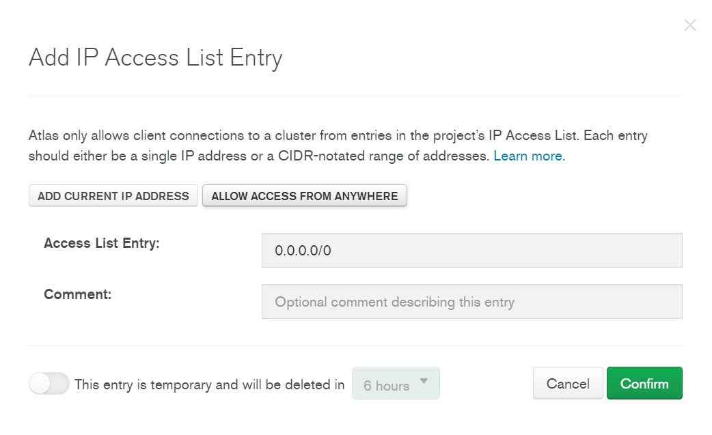
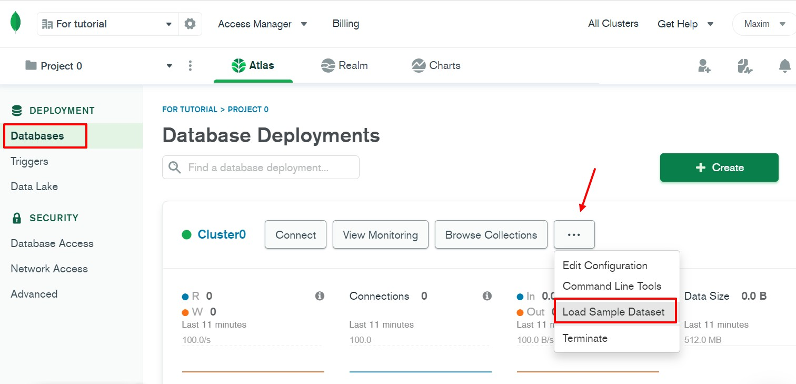
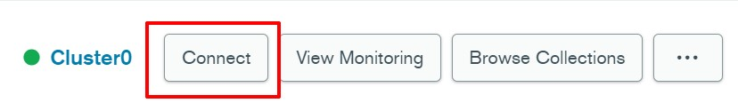
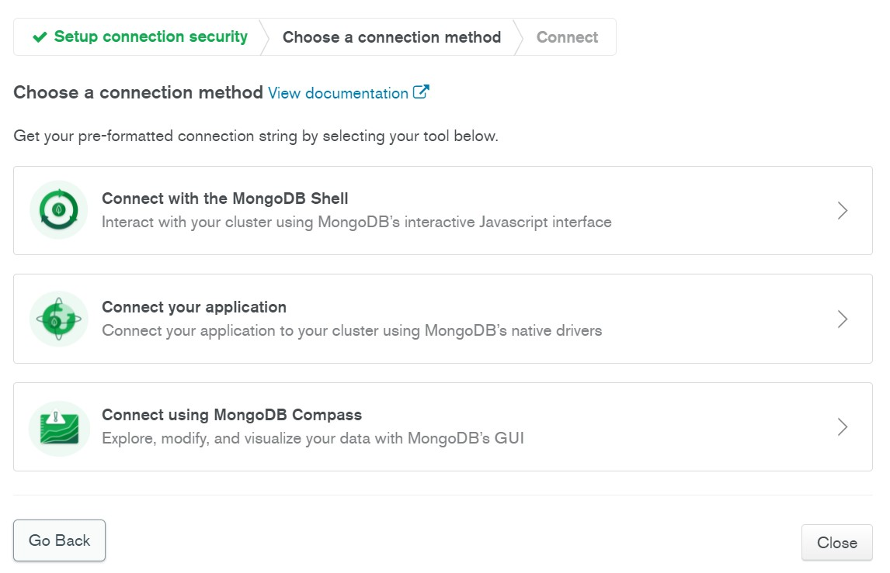
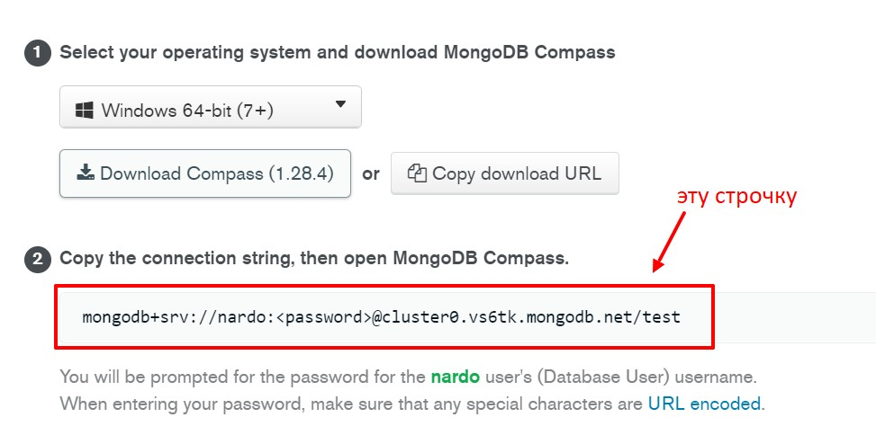

1Первое что необходимо - это зарегистрироваться на сайте https://www.mongodb.com/. Нажимаем Try free и заполняем простую форму:
2 После регистрации и верификации email мы попадаем в личный кабинет. Там система предложит нам создать кластер. Следуя подсказкам мастера создаем его. После того как мы все выбрали, начнется процесс создания кластера. Этот процесс займет некоторое время и что бы не ждать просто так, мы должны попасть в два раздела:
3 В Database Access нам необходимо будет создать пользователя который будет иметь доступ до нашей БД и иметь права на добавление, изменение и удаление данных.
Так же при создании пользователя необходимо отключить ограничения:
4 Теперь нам необходимо настроить сеть. для этого заходим в раздел Network Access. В этом разделе нам необходимо указать ip адрес, сети которой будут иметь доступ до нашей БД. В качестве обучения можно нажать на кнопку: Add Current IP Address. Система вставит тот ip адрес который мы используем для подключения. Так же можно нажать кнопку Allow Access from Anywhere и тогда доступ будут иметь пользователи из любой сети. По хорошему здесь нужно вводить адрес сервера на котором будет развернут проект.
5 Следующий шаг - это нам надо добавить тестовые базы данных. Для этого переходим в раздел Databases. Жмем по трем точкам и выбираем Load Sample Dataset
Эти базы данных будут весить 350 мб. ждем когда они подгрузятся.
Для подключения необходимо выбрать раздел Connect
Вылезет всплывающее окно где mongo предложит нам три способа подключения:
1 Начнем с низу: Connect using MongoDB Compass - здес система предложит нам установить Mongo Compass - очень удобное приложение в котором мы можем управлять нашей БД. Так же можно в VSCode установить плагин MongoDB в котором можно ввести строку соединения и управлять бозой из IDE
Здесь нужно обратить внимание на то что в строчке надо вставить пароль. Это тот самый пароль пользователя которого мы создавали в разделе Database Access
2 Второй способ подключения - Connect your application. Здесь мы получаем такую же строчку в которую так же необходимо вставить пароль все того же пользователя. Как подключать базу в приложении написанном на NextJS смотреть в разделе NexJS - MongoDB